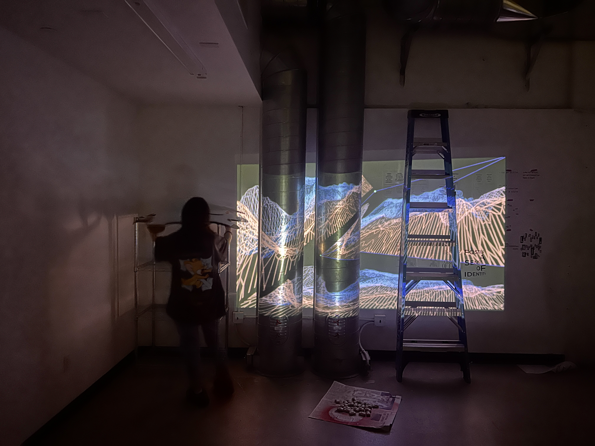

Projection Mapping Workshop
Create a 3D space
I think the tubes, the ladder and the cardboard are good elements to enhance the visual effect of the waves.

Screen-based imagery
I aim to replicate the rhythmic motion of waves. I utilize lines and noise functions to modulate the velocity of the waves, while employing ramps to manipulate gradient colors.

Iteratation of the source material and space
abc
Interaction in The Space
the original video of the wave
the wave video with the freeze point music
the visual effect on the tubes